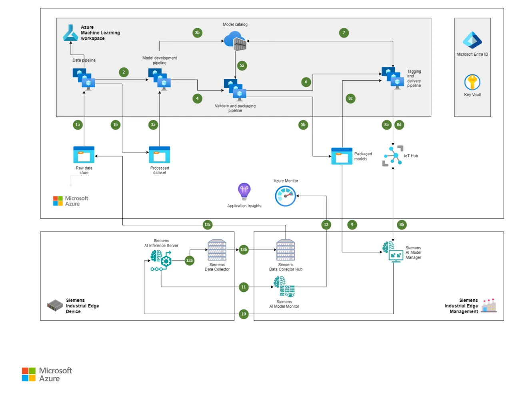

Microsoft & Siemens 공식 레퍼런스 — Azure ML 학습·패키징 → IoT Hub → Siemens AI Model Manager · Industrial Edge · AI Inference Server → 모니터링·환류

Reference: learn.microsoft.com/azure/architecture/example-scenario/manufacturing/azure-ai-siemens-industrial-edge